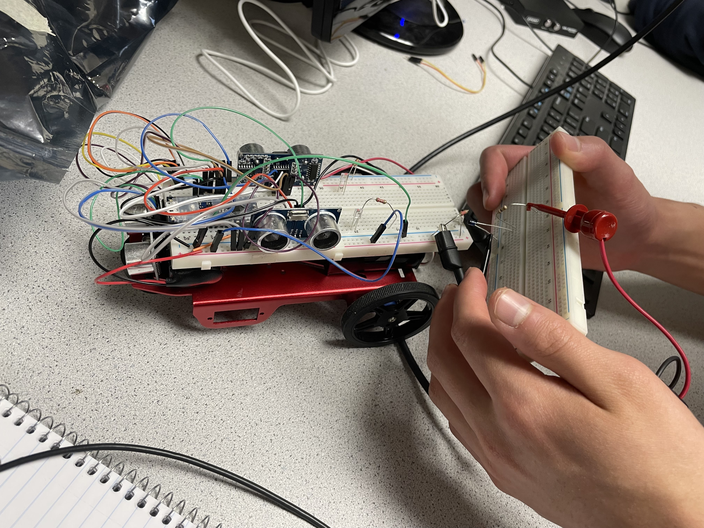
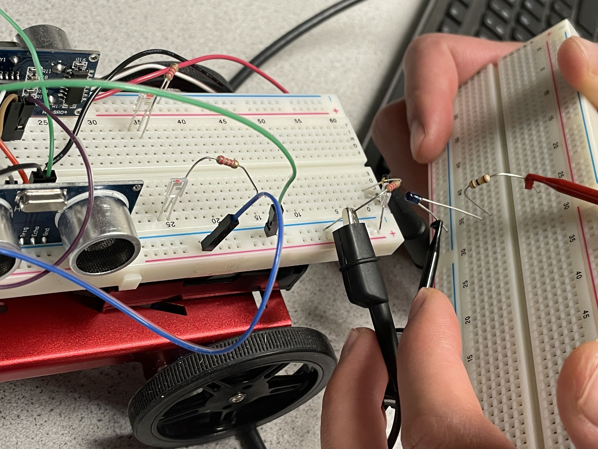
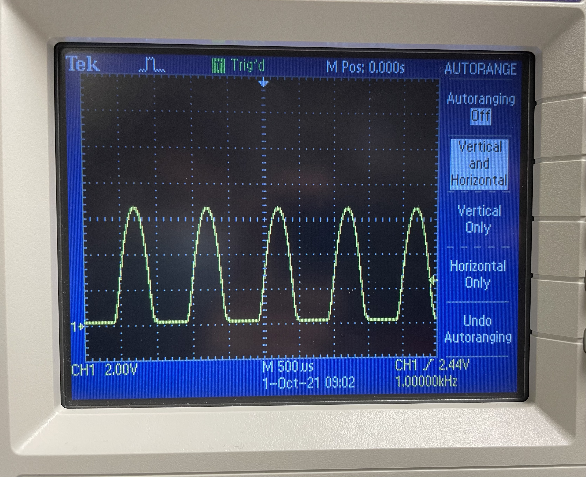
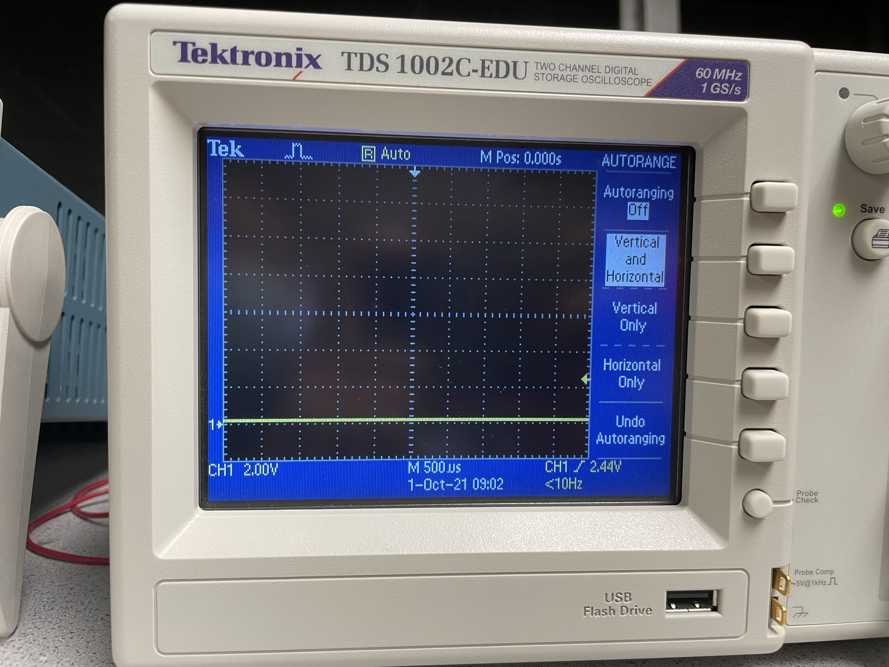
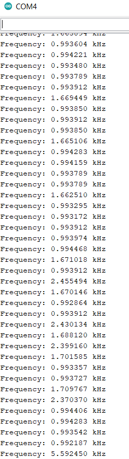
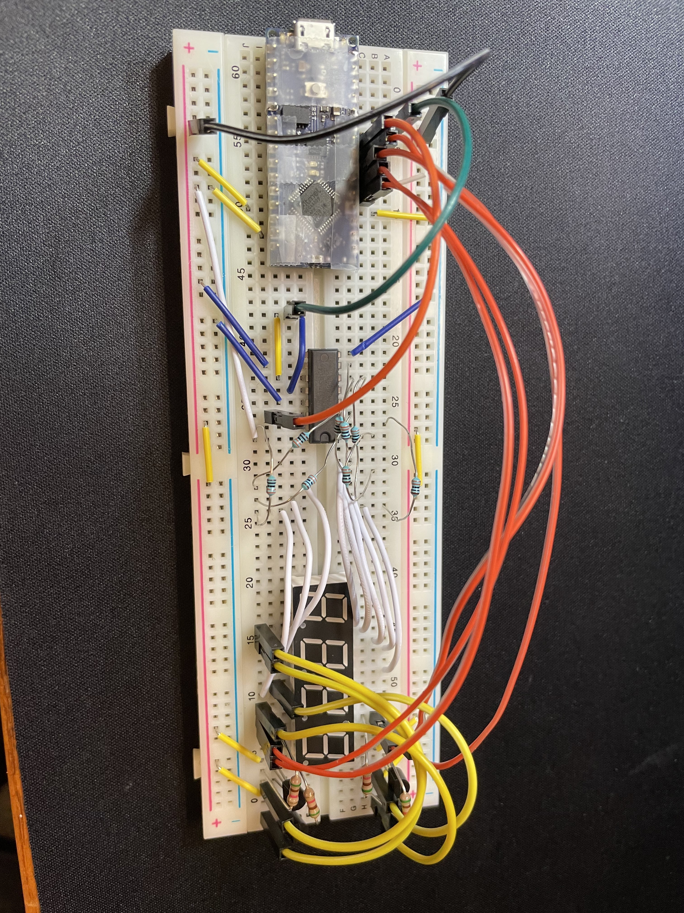

Summary
For Lab 2, for two weeks, my lab partner and I worked on the treasure detection aspect of "The Robot".
In the first week, we built a simple IR light detection circuit with phototransistor on "The Robot" as shown in Figure 1 and Figure 2. Then we built a simple IR light emitting circuit using the signal generator on a separate breadboard which is also shown in Figure 1 and Figure 2. We also tested our IR detection circuit with the oscilloscope as shown in Figure 3 and Figure 4. After that, we tested our IR detection circuit with the Arduino Nano Every as shown in Figure 5. Finally, we built the other two IR light detection circuits on "The Robot"'s breadboard. The specifications of what we did is shown in each figure descriptions.
In the second week, My lab partner and I built a display component of the base station on a separate breadboard. We also tested our display base station circuitry as shown in Figure 6. The specifications of what we did is shown in figure description.
Pictures
Figure 1. The IR detection circuit is shown on "The Robot". The IR emission circuit is shown on the separate circuit board on the right. The IR detection circuit consists of phototransistors and 2k Ohm resistor. The IR emission circuit consists of IR LED and a 60 Ohm resistor.
Figure 2. This is a close up of Figure 1.
Figure 3. This is a picture of the signal shown in the oscilloscope when the IR LED is close to the phototransistor on "The Robot". Figure 1 and 2 are examples of when the IR LED is close to the phototransistor.
Figure 4. This is a picture of the signal in the oscilloscope when the IR LED is far away from the phototransistor on "The Robot".
Figure 5. This is the serial monitor of the frequency data that the Arduino Nano Every is picking up from reading the frequency of the blinking IR LED from the phototransistor.
Figure 6. This is a base station that has been built which consists of a shift register, 4-digit 7-Segment Display, resistors, Arduino Nano Every and transistors. This base station will be used to display the wirelessly transmitted data of the frequency of a treasure that "The Robot" has measured throught the phototransistor.
Reflection/ Final Thoughts
This part of the lab was much shorter than Lab 1 but I feel like this lab is also the most interesting lab so far. Also, 2 other IR detection circuits were built left and right side of "The Robot" and the functionality of the base station was tested by making it display the numbers 2468 to show that the circuit was functional.